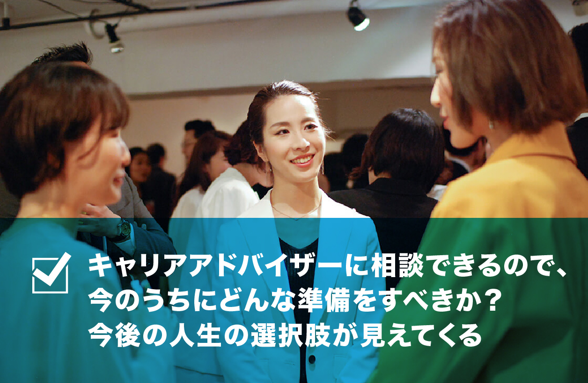
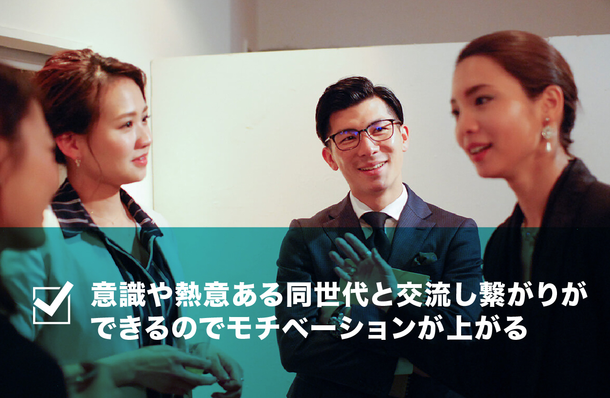
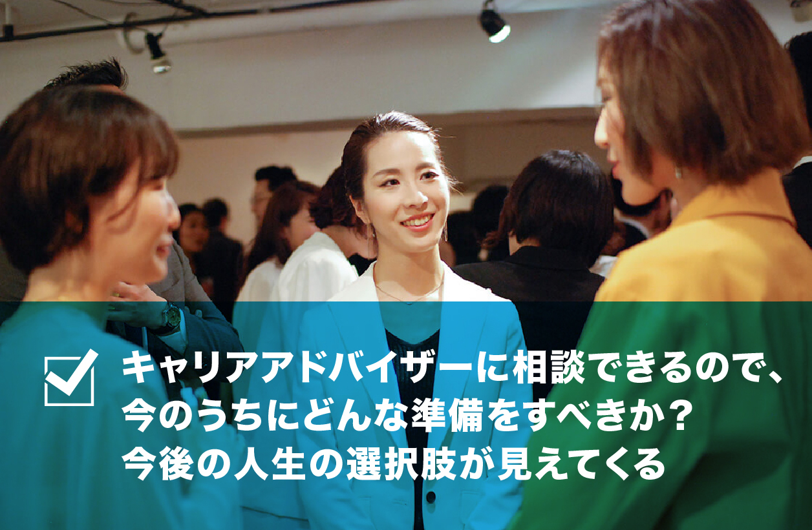
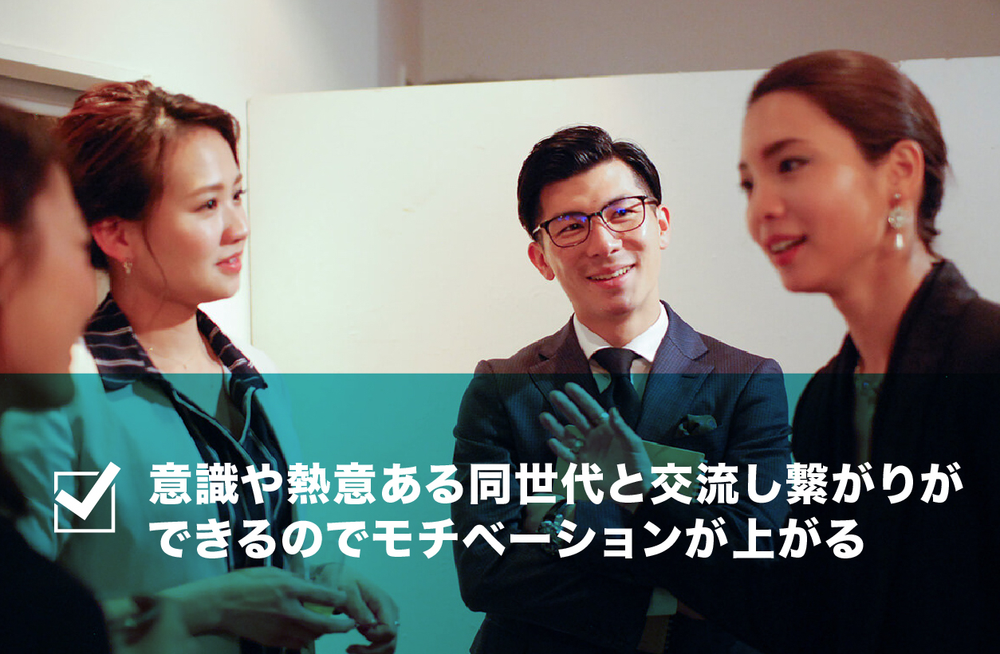
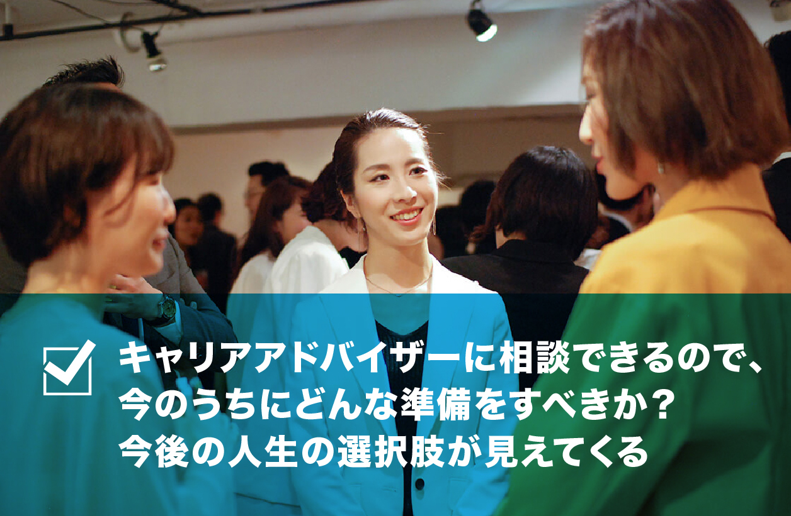
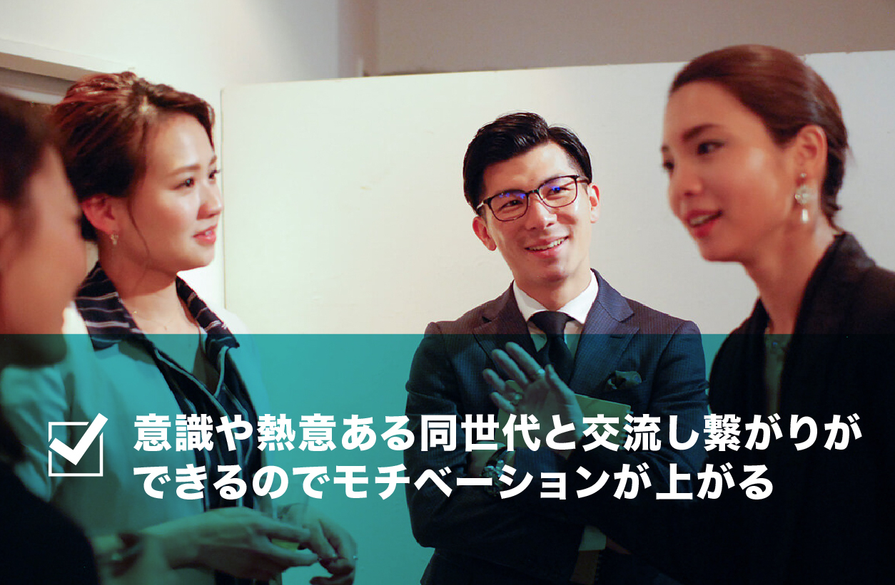

セミナーに参加すると
こんなことが得られます
 




・思っていた仕事と違う
・仕事が思うようにいかず自信がない
・このまま今の仕事を続けるべきか？本当は自分に向いていない？
・日々の仕事にやりがいや、新鮮さを見いだすことができない
・やりたいことが見つからない、何を頑張ったらいいのかわからない
・結婚や出産したら今の仕事はどうしよう？先のことが見えない
自分の視点での「こんな仕事がしたい」「こんな会社に入りたい」などはあっても、その逆側の視点って意外に見落としがちな人もいるのでは？
BEYONDの”テーマ”は「企業のぶっちゃけ」
経営者や人事など人を採用する側の視点から、
「今どのような人材が求められているのか？」
「ぶっちゃけどんなところを見て人を採用しているのか？」
「ぶっちゃけどんな人がうまくいくのか？」
BEYONDは、世の中の企業の経営者や人事担当者をお招きし、
為のきっかけとなる環境を提供していきます。


友人の紹介で参加しました。セミナー内容がとても
今の自分にとってピッタリなもので将来をとても考え
させられました。自己啓発本などとは違う生の経営
者の声はリアルで響きました。是非2回目も参加し
たいです。
こういったセミナーに参加するのは初めてで緊張し
たのですが、参加者の皆さんが歳も近くていい方ば
かりだったので安心しました。セミナーは普段聞い
た事もない新鮮な内容ばかりでとても面白かったで
す。また参加したいです。
普段からセミナーや勉強会に参加するのですが、企
画がとてもユニークでとても楽しい時間を過ごせま
した。特にセミナー後の懇親会では歳が近くて頑張
っている方々と繋がれたのでとても良い刺激になり
ました。ありがとうございました。

2018年7月18日、第6回"BEYOND"AT LIFEJUNCTIONが開催。ゲストスピーカに 「起業家 中村勇気氏」をお招きし、 「”個の時代になった今、求められる人材 とは？”」「”企業寿命よりも個人寿命が 長い時代において身につけるべき実力と は？”」「スキルや専門[...]」

2018年7月18日、第6回"BEYOND"AT LIFEJUNCTIONが開催。ゲストスピーカーに TEAM COLORS ボディメイクトレーナー GOUKI氏をお招きし、見た目を変えるトー タルプロデュースを指導するアーティス ト視点から「確実に相手に印象を残すに は？」「初[...]」
2018年7月18日、第6回"BEYOND"AT LIFEJUNCTIONが開催。ゲストスピーカーに「スローガン株式会社 HR＆PR室 室長 採用コンサルタント 金子 歩美氏」をお招きし、「市場で評価され、自分の人生を生きる20代のキャリアとは」をテーマにお話[...]
2018年7月18日、第6回"BEYOND"AT LIFEJUNCTIONが開催。ゲストスピーカーに TEAM COLORS ボディメイクトレーナー GOUKI氏をお招きし、見た目を変えるトー タルプロデュースを指導するアーティス ト視点から「確実に相手に印象を残すに は？」「初[...]」